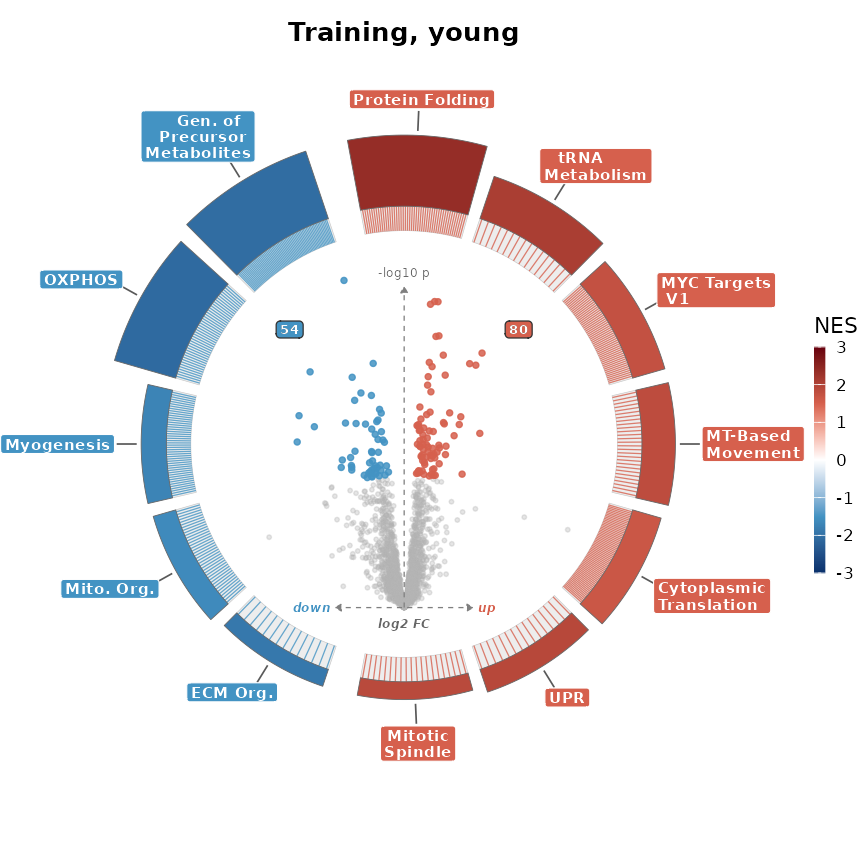
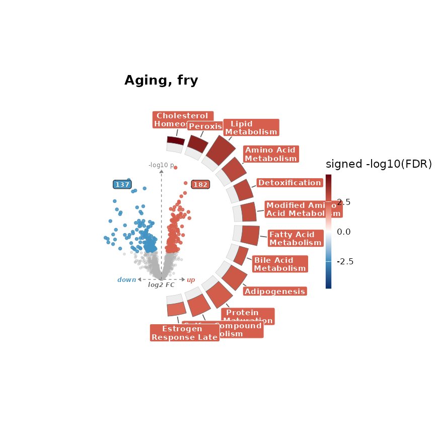
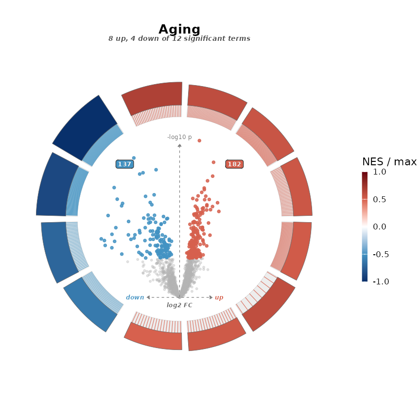
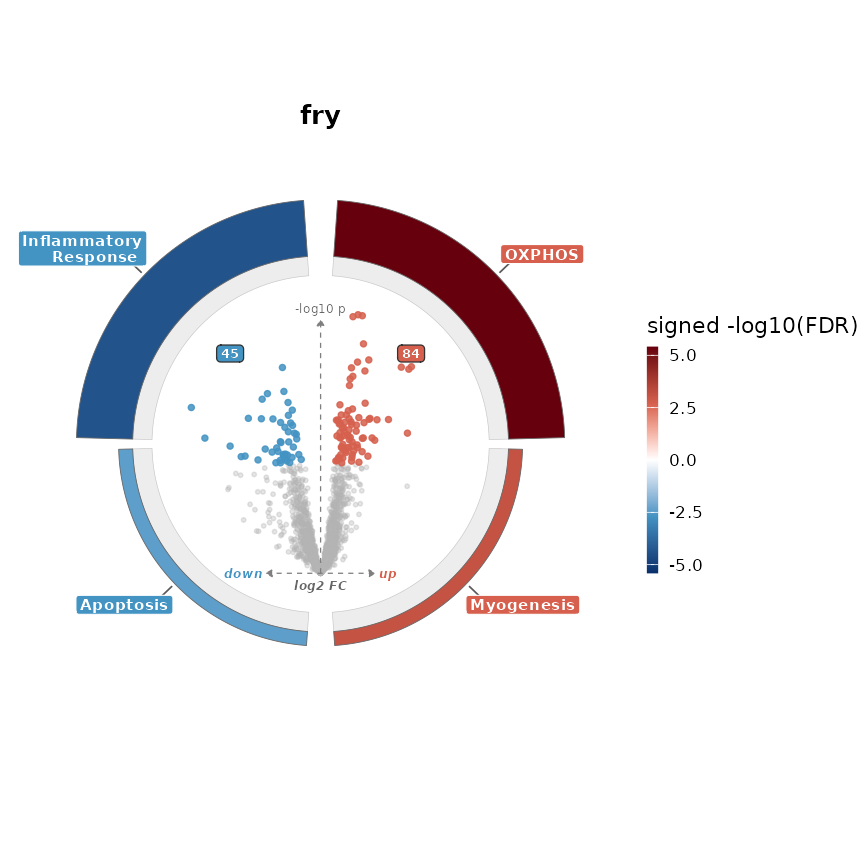
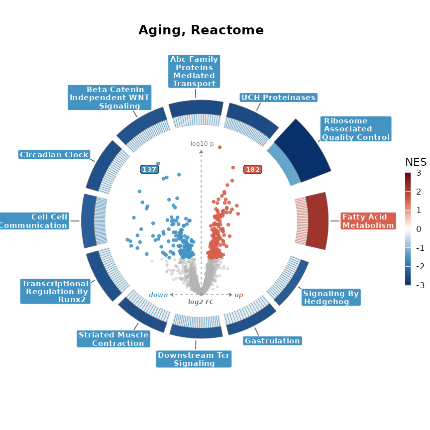
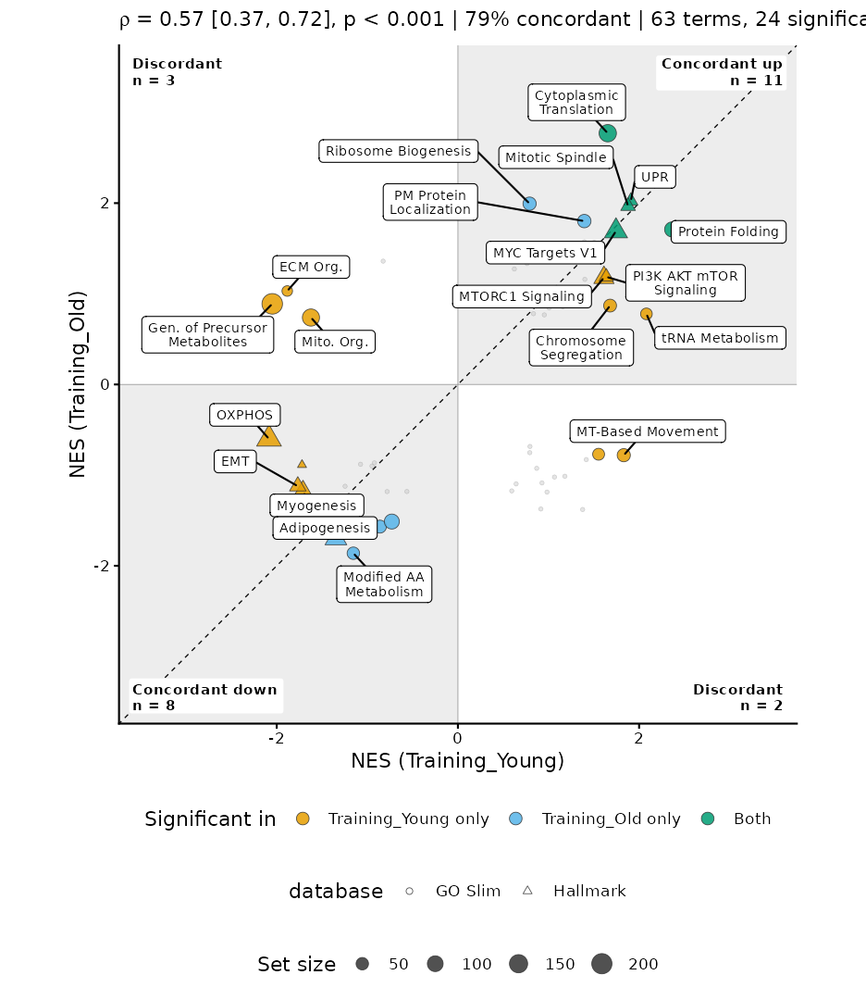
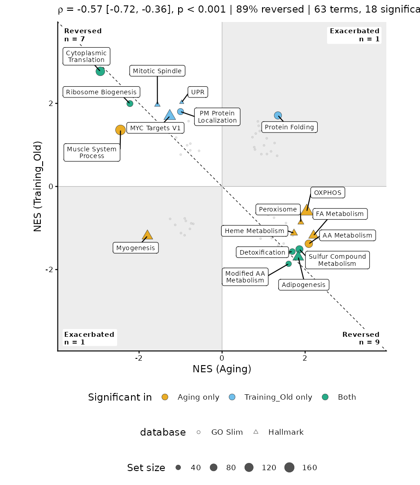
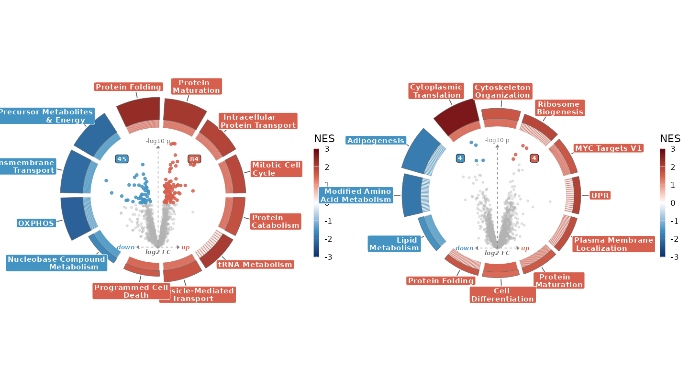

enrichVolcano turns differential-abundance results into enrichment figures. The steps:
- Read your results.
read_study()reads a set of study files;as_da()reads one DA table from limma, limpa, proteoDA, MSstats, proDA, msqrob2, prolfQua or ProtRank. - Get enrichment.
run_enrichment()runs fgsea, camera and fry.as_enrichment()converts results you already have. Both return one validatedenrichmentobject per test. - Optionally,
dedup_terms()flags redundant terms so a figure shows each signal once. - Plot.
plot_volcano_ring()puts the volcano inside a ring of enrichment terms.plot_bias_ring()rings it with every significant term.plot_scatter()compares two contrasts term by term. - Write.
write_plot()saves figures to one PDF;write_table()saves results to CSV.
Quick start
The yvo example study is human muscle from 32 people,
young and old, before and after resistance training: 2,106 proteins in
62 samples, quantified with limpa, with four contrasts. It ships every
sheet a study can have, so the whole workflow runs on it:
library(enrichVolcano)
yvo <- read_example("yvo")
#> 2103 of 2106 accessions mapped to Homo sapiens symbols.
#> 2106 of 2106 matrix proteins have DA results.
sets <- load_gene_sets(c("Hallmark", "GO Slim"))
set.seed(1)
res <- run_enrichment(yvo, sets)
#> Up to 10 of 2103 ranked genes tie; fgsea orders tied genes arbitrarily.
res$fgsea
#> <enrichment> fgsea, score: NES
#> 4 contrasts: Training_Young, Training_Old, Aging, and Interaction
#> 376 rows: GO Slim (232) and Hallmark (144)
#> Dedup: not deduplicatedread_example() read the study through
read_study(), which checked that its sheets agree and
looked up current gene symbols for the UniProt accessions.
run_enrichment() returned one result per test; here is the
fgsea one drawn around the volcano:
plot_volcano_ring(yvo$da, res$fgsea, contrast = "Training_Young", title = "Training, young")
Arc fill is NES and arc height is
(padj).
Up-regulated terms sit on the right half and down-regulated ones on the
left, the most significant at the top. Ticks run from each arc to its
leading-edge proteins in the volcano. The ring takes the twelve most
significant unique terms (padj < 0.05), in either direction, from
every collection in the object; databases,
term_threshold, n_terms and terms
change the selection.
Your data
A study is up to five tables, in one Excel workbook (one sheet each) or a folder of CSV files:
| Sheet | Columns | Needed for |
|---|---|---|
da_results |
protein, contrast, logFC,
t or p, padj, optional
abundance
|
everything |
matrix |
protein IDs, then one column per sample | camera, fry |
samples |
sample, group, optional
subject, optional covariates |
camera, fry |
contrasts |
name, expression,
e.g. Post - Pre
|
camera, fry |
weights |
shaped like matrix
|
optional precision weights |
read_study() reads either form and checks that the
sheets agree by name: matrix columns against
samples$sample, every group in a contrast against
samples$group, and the contrasts in da_results
against the contrasts sheet. Group names must be plain
names (letters, digits, . and _), because
- inside one would read as subtraction. An interaction is a
difference of differences:
(BFR_T2 - BFR_T1) - (HLRT_T2 - HLRT_T1).
The da_results sheet can use each tool’s own column
names; as_da() recognises limma and limpa
topTable(), proteoDA, MSstats, proDA, msqrob2, prolfQua and
ProtRank output, and takes column arguments for anything else. Proteins
are ranked by the moderated t where the table has one, otherwise by the
signed
p-value (Reimand et al. 2019), or by the signed
padj when that is all the table has.
The package ships seven studies in this format:
read_example()[c("name", "species")]
#> name species
#> 1 bfr_limpa Homo sapiens
#> 2 mouse_pas Mus musculus
#> 3 yvo Homo sapiens
#> 4 bfr_proteoda Homo sapiens
#> 5 cvh Homo sapiens
#> 6 hrvlr Homo sapiens
#> 7 mito Rattus norvegicusyvo, bfr_limpa and mouse_pas
include every sheet; the others ship DA results only.
Run the enrichment
run_enrichment() tests each contrast against gene-set
collections from load_gene_sets(), which records the
msigdbr version and GO slim release it used. The quick start ran all
three tests on yvo:
names(res)
#> [1] "fgsea" "camera" "fry"
res$camera
#> <enrichment> cameraPR, score: signed -log10(FDR)
#> 4 contrasts: Training_Young, Training_Old, Aging, and Interaction
#> 376 rows: GO Slim (232) and Hallmark (144)
#> Dedup: not deduplicatedThe three tests answer different questions. fgsea (Korotkevich et
al. 2019), a fast GSEA (Subramanian et al. 2005), and camera (Wu and
Smyth 2012) are competitive: did a set move more than the other genes?
fry, the fast form of roast (Wu et al. 2010), is self-contained: did it
move at all? fgsea ranks proteins by the DA results; camera and fry
refit limma (Ritchie et al. 2015) on the matrix, which must have no
missing values, using the samples and
contrasts sheets. When a gene has several proteins, the
most abundant one represents it.
A subject column marks repeated measures. By default the
samples of one subject are treated as correlated
(subject_effect = "block"; Smyth et al. 2005); fry handles
that directly, and camera, which cannot, is replaced by
cameraPR() on the blocked fit, which is why
res$camera above reports cameraPR.
subject_effect = "fixed" puts subject in the design
instead. camera assumes a correlation between genes in a set; limma’s
default is 0.01, and inter_gene_cor = NA estimates it from
the data (unblocked designs only), which can change results
substantially.
Each result is an enrichment object, so every figure
reads any of them:
plot_volcano_ring(yvo$da, res$fry, contrast = "Aging", title = "Aging, fry")
See the whole contrast
The ring above draws the twelve most significant terms.
plot_bias_ring() draws every significant term of a
contrast, without names, to show whether the contrast leans up or down.
Each arc gets the same angle, so the larger half holds more terms. Fill
and height are each score over the strongest score in the contrast.
plot_bias_ring(yvo$da, res$fgsea, contrast = "Aging", title = "Aging")
Choose gene-set collections
Hallmark and GO slim make a good default pair for figures. The 50
Hallmark sets each summarise one well-defined biological state (Liberzon
et al. 2015), and the GO Consortium’s generic slim keeps a small set of
broad terms from the Gene Ontology (Ashburner et al. 2000; Gene Ontology
Consortium 2023). Both are built to avoid overlapping terms, so every
arc says something different. Larger collections such as GO:BP or Reactome find more specific terms but need
dedup_terms().
load_gene_sets() fetches them for human, mouse or rat.
Hallmark, Reactome, KEGG MEDICUS and GO:BP come from MSigDB (Liberzon et al. 2011) through
msigdbr, mouse and rat through orthologs. The GO slim is the
biological-process part of the GO Consortium’s generic slim, pinned in
the package, with genes taken from the species’ annotation package
(org.Hs.eg.db, org.Mm.eg.db or org.Rn.eg.db), counting genes annotated
to each term or any of its descendants:
lengths(sets)
#> Hallmark GO Slim
#> 50 69
attr(sets, "versions")
#> $species
#> [1] "Homo sapiens"
#>
#> $annotation
#> [1] "org.Hs.eg.db 3.23.1"
#>
#> $msigdbr
#> [1] "26.1.1"
#>
#> $go_slim
#> [1] "go/releases/2026-07-26/subsets/goslim_generic.owl"Every set is kept here. run_enrichment() tests sets with
15 to 500 of their genes measured in the data (min_size,
max_size). Each collection is tested as its own family, so
padj is corrected within it. attr(sets, "versions") records
what to cite in your methods.
Convert enrichment you already have
as_enrichment() reads enrichment results you computed
elsewhere. The package ships YvO’s published fgsea results, from the
original proteoDA analysis, in the form fgsea wrote them:
ex <- as_enrichment(read.csv(
system.file("extdata", "examples", "yvo_fgsea.csv.gz", package = "enrichVolcano")
))
#> Reading "fgsea" results.
ex
#> <enrichment> fgsea, score: NES
#> 4 contrasts: Aging, Training_Young, Training_Old, and Interaction
#> 5570 rows: GO Slim (108), GO:BP (3946), Hallmark (144), KEGG (84), and Reactome
#> (1288)
#> Dedup: precomputedIt recognised fgsea output from its columns and split the table by
its contrast column. Every tool below ends in the same
object. Pass one table per contrast as a named list, or one table with a
contrast column.
fgsea
res <- fgsea::fgsea(pathways, stats = ranks)
x <- as_enrichment(list(Aging = res), database = "Hallmark")The score is the normalised enrichment score (NES): how far the gene
set sits toward the top or bottom of the ranking, scaled so sets of
different sizes compare. database labels every row when the
table has no database column.
clusterProfiler
res <- clusterProfiler::gseGO(gene_list, ont = "BP", OrgDb = org.Hs.eg.db::org.Hs.eg.db)
x <- as_enrichment(list(Aging = res), database = "GO:BP")The gseaResult object from clusterProfiler (Wu et
al. 2021) is read directly. The score is NES and the leading edge comes
from core_enrichment.
limma: fry and mroast
res <- limma::fry(y, index = gene_sets, design = design, contrast = contrast)
x <- as_enrichment(list(Aging = res), database = "Hallmark")fry and mroast are self-contained tests: they ask whether the genes in a set changed at all, without reference to genes outside it. Neither reports an effect size like NES, or a leading edge. The score is therefore (FDR), signed by the reported direction, and the figure’s legend says so. The table below has fry’s shape; the numbers are invented to show the conversion.
fry_res <- data.frame(
NGenes = c(200, 150, 180, 160),
Direction = c("Up", "Up", "Down", "Down"),
PValue = c(1e-6, 4e-4, 2e-5, 3e-3),
FDR = c(4e-6, 8e-4, 4e-5, 4e-3),
PValue.Mixed = c(1e-7, 1e-4, 1e-5, 1e-3),
FDR.Mixed = c(4e-7, 2e-4, 2e-5, 1e-3),
row.names = c(
"HALLMARK_OXIDATIVE_PHOSPHORYLATION", "HALLMARK_MYOGENESIS",
"HALLMARK_INFLAMMATORY_RESPONSE", "HALLMARK_APOPTOSIS"
)
)
fry_x <- as_enrichment(list(Training_Young = fry_res), database = "Hallmark")
#> Reading "fry" results.
plot_volcano_ring(yvo$da, fry_x, contrast = "Training_Young", title = "fry")
With no NES to encode, arc fill carries the signed (FDR) and arc height switches to set size, so the two channels show different facts.
limma: camera and cameraPR
res <- limma::camera(y, index = gene_sets, design = design, contrast = contrast)
x <- as_enrichment(list(Aging = res), enrichment_test = "camera", database = "Hallmark")camera and cameraPR are competitive tests, like fgsea: they ask
whether a set changed more than the genes outside it. Their default
output has identical columns, so as_enrichment() cannot
tell them apart and asks you to name the test with
enrichment_test. camera run with
inter.gene.cor = NA adds a Correlation column
and is recognised automatically.
Over-representation analysis
up <- enrichR::enrichr(up_genes, "GO_Biological_Process_2023")[[1]]
down <- enrichR::enrichr(down_genes, "GO_Biological_Process_2023")[[1]]
up$direction <- "up"
down$direction <- "down"
x <- as_enrichment(
list(Aging = rbind(up, down)),
enrichment_test = "ora",
term = "Term", padj = "Adjusted.P.value", p = "P.value", leading_edge = "Genes"
)Over-representation asks whether a gene list overlaps a set more than
chance predicts; it has no direction of its own. Run it on up- and
down-regulated genes separately and stack the two with a
direction column. The score is signed
(padj).
Anything else
x <- as_enrichment(
list(Aging = my_table),
enrichment_test = "custom",
term = "set", score = "stat", padj = "q", size = "n", score_type = "z"
)Name the columns and, optionally, what the score is;
score_type becomes the legend title.
Deduplicate
Related gene sets often reach significance together. In GO:BP or Reactome, one biological signal
can light up a dozen overlapping terms. dedup_terms() flags
all but one per cluster as "redundant", and plots hide
redundant terms by default (collapse = TRUE). No row is
removed and no p-value changes: the multiple-testing correction already
covered every term, so redundancy is a display decision.
gene_sets <- split(msig$gene_symbol, msig$gs_name)
x <- dedup_terms(x, gene_sets)
x <- dedup_terms(x, gene_sets, similarity = "jaccard")
x <- dedup_terms(x, gene_sets, method = "collapse_pathways", stats = list(Aging = ranks))Within each contrast and database, significant terms are walked from the smallest padj. A term is redundant when its gene set is similar enough to a term already kept:
-
similarity = "combined"(default, cutoff 0.375) is the EnrichmentMap coefficient (Merico et al. 2010; Reimand et al. 2019): the mean of the Jaccard index and the overlap coefficient. The overlap coefficient catches a small set nested inside a large one, which Jaccard alone misses. -
similarity = "jaccard"(cutoff 0.5) is shared genes over all genes in either set.
method = "collapse_pathways" is a different kind of
rule. It calls fgsea::collapsePathways(), which asks
whether a term is still enriched once the genes of a more significant
term are conditioned on. That is a new statistical test, so it needs the
ranking each contrast was tested on, works only for ranked GSEA results,
and should be reported as its own analysis. Call set.seed()
first; it permutes.
The published fgsea results carry flags computed upstream with the
Jaccard rule. as_enrichment() keeps them and records the
object as precomputed:
table(ex@results$dedup_status, ex@results$database, useNA = "ifany")
#>
#> GO Slim GO:BP Hallmark KEGG Reactome
#> kept 34 173 22 20 292
#> redundant 0 79 0 35 261
#> <NA> 74 3694 122 29 735Hallmark and GO slim lose nothing because both are built to be non-redundant. Deduplication matters for large collections such as Reactome:
reactome <- load_gene_sets("Reactome")
set.seed(1)
aging <- run_enrichment(yvo, reactome, tests = "fgsea")$fgsea
#> Up to 10 of 2103 ranked genes tie; fgsea orders tied genes arbitrarily.
aging <- dedup_terms(aging, reactome$Reactome)
plot_volcano_ring(yvo$da, aging, contrast = "Aging", title = "Aging, Reactome")
Compare two contrasts
plot_scatter() plots every term’s score in one contrast
against its score in another. It answers two kinds of question, set by
comparison. The examples below draw from the published
fgsea results, ex; res$fgsea works the same
way.
The default, comparison = "concordance", asks whether
two conditions regulate the same pathways. Terms in the shaded top-right
and bottom-left quadrants move the same way in both.
plot_scatter(ex, "Training_Young", "Training_Old", databases = c("Hallmark", "GO Slim"))
comparison = "reversal" asks whether one condition
undoes another. The unshaded quadrants hold the answer: a pathway raised
by aging and lowered by training, or the reverse. The reference line
becomes
.
plot_scatter(ex, "Aging", "Training_Old",
comparison = "reversal", databases = c("Hallmark", "GO Slim")
)
A term counts as significant in a contrast when its padj is below
term_threshold (0.05); the colour says whether that holds
in one contrast or both. Pathways are judged on the false discovery rate
alone. Scores that combine effect size with p, such as the
-value
(Xiao et al. 2014), are defined for single proteins, not gene sets. The
corner counts and the headline share use significant terms only;
Spearman’s
uses every plotted term, with a 95% Fieller interval (Fieller et
al. 1957) when the correlation package (Makowski et al. 2020) is
installed.
colour_by and shape_by take any per-term
column, for example colour_by = "database", and
databases, collapse and
label_min_size work as they do for the ring.
Change the look
plot_theme() holds the palette; the plot arguments hold
the layout.
plot_volcano_ring(yvo$da, res$fgsea,
contrast = "Training_Young",
theme = plot_theme(palette = "okabe"),
label_mode = "top_per_direction", label_n = 4
)The arguments you will reach for most:
-
magnitude: what arc height encodes,"neg_log_padj"or"size". -
arc_height_range: shortest and tallest arc. -
arc_order: order arcs by"padj"or by absolute score within each half. -
x_scale,y_scale: compress the volcano when points crowd the ring. -
label_mode,label_n,label_genes: which proteins get text. -
labels: the label style, or your own names (see below). -
show_counts,disc_colour: count badges and a tinted central disc.
Name the terms
Hallmark and GO slim terms carry labels written for the package, in
two styles. "short", the default, fits two lines on the
ring; "clean" spells every word out. Any other term,
including one from your own gene sets, loses its database prefix and
underscores and is title-cased.
list_labels() picks terms the way the ring does and
lists each once, with both styles:
lbl <- list_labels(res$fgsea)
head(lbl[, c("term", "clean", "short")])
#> term
#> 1 GOSLIM_CYTOPLASMIC_TRANSLATION
#> 2 GOSLIM_MUSCLE_SYSTEM_PROCESS
#> 3 GOSLIM_GENERATION_OF_PRECURSOR_METABOLITES_AND_ENERGY
#> 4 GOSLIM_LIPID_METABOLIC_PROCESS
#> 5 HALLMARK_OXIDATIVE_PHOSPHORYLATION
#> 6 GOSLIM_PROTEIN_FOLDING
#> clean
#> 1 Cytoplasmic Translation
#> 2 Muscle System Process
#> 3 Generation of Precursor Metabolites and Energy
#> 4 Lipid Metabolic Process
#> 5 Oxidative Phosphorylation
#> 6 Protein Folding
#> short
#> 1 Cytoplasmic Translation
#> 2 Muscle System Process
#> 3 Precursor Metabolites\\n& Energy
#> 4 Lipid Metabolism
#> 5 OXPHOS
#> 6 Protein FoldingTo rename terms, write the list to CSV, edit the label
column and pass the table back. Write a line break as
\n:
write_labels(res$fgsea, "labels.csv")
plot_volcano_ring(yvo$da, res$fgsea, contrast = "Aging", labels = read.csv("labels.csv"))labels = "clean" switches style, a named vector renames
a few terms, and a function names every term your own way:
plot_scatter(res$fgsea, "Training_Young", "Training_Old", labels = "clean")
plot_volcano_ring(yvo$da, res$fgsea,
contrast = "Aging",
labels = c(HALLMARK_OXIDATIVE_PHOSPHORYLATION = "Mito respiration")
)
plot_volcano_ring(yvo$da, res$fgsea, contrast = "Aging", labels = function(term) sub("^[A-Z]+_", "", term))Write figures and tables
Every plot function returns one ggplot. write_plot()
takes a named list of them and writes one PDF. Page 1 is a composite
lettered A, B, C in list order. Each later page holds one panel at full
size, headed by its letter and name. Fonts are embedded.
panels <- list(
"Training, young" = plot_volcano_ring(yvo$da, res$fgsea, contrast = "Training_Young"),
"Training, old" = plot_volcano_ring(yvo$da, res$fgsea, contrast = "Training_Old"),
"Young against old" = plot_scatter(res$fgsea, "Training_Young", "Training_Old")
)
write_plot(panels, "training.pdf", design = "AB\nCC", caption = "fgsea, Hallmark and GO slim")To see a composite on screen, pass the list to
patchwork::wrap_plots():
patchwork::wrap_plots(panels[1:2], ncol = 2)
write_table() writes one enrichment object, or the whole
list from run_enrichment(), to one CSV with an
enrichment_test column:
write_table(res, "yvo_enrichment.csv")References
Ashburner M, Ball CA, Blake JA, et al. (2000). Gene Ontology: tool for the unification of biology. Nature Genetics 25:25-29. https://doi.org/10.1038/75556
Fieller EC, Hartley HO, Pearson ES (1957). Tests for rank correlation coefficients. I. Biometrika 44:470-481. https://doi.org/10.1093/biomet/44.3-4.470
Gene Ontology Consortium (2023). The Gene Ontology knowledgebase in 2023. Genetics 224:iyad031. https://doi.org/10.1093/genetics/iyad031
Korotkevich G, Sukhov V, Sergushichev A (2019). Fast gene set enrichment analysis. bioRxiv. https://doi.org/10.1101/060012
Liberzon A, Subramanian A, Pinchback R, et al. (2011). Molecular signatures database (MSigDB) 3.0. Bioinformatics 27:1739-1740. https://doi.org/10.1093/bioinformatics/btr260
Liberzon A, Birger C, Thorvaldsdottir H, et al. (2015). The Molecular Signatures Database hallmark gene set collection. Cell Systems 1:417-425. https://doi.org/10.1016/j.cels.2015.12.004
Makowski D, Ben-Shachar MS, Patil I, Lüdecke D (2020). Methods and algorithms for correlation analysis in R. Journal of Open Source Software 5:2306. https://doi.org/10.21105/joss.02306
Merico D, Isserlin R, Stueker O, Emili A, Bader GD (2010). Enrichment Map: a network-based method for gene-set enrichment visualization and interpretation. PLoS ONE 5:e13984. https://doi.org/10.1371/journal.pone.0013984
Reimand J, Isserlin R, Voisin V, et al. (2019). Pathway enrichment analysis and visualization of omics data using g:Profiler, GSEA, Cytoscape and EnrichmentMap. Nature Protocols 14:482-517. https://doi.org/10.1038/s41596-018-0103-9
Ritchie ME, Phipson B, Wu D, et al. (2015). limma powers differential expression analyses for RNA-sequencing and microarray studies. Nucleic Acids Research 43:e47. https://doi.org/10.1093/nar/gkv007
Smyth GK, Michaud J, Scott HS (2005). Use of within-array replicate spots for assessing differential expression in microarray experiments. Bioinformatics 21:2067-2075. https://doi.org/10.1093/bioinformatics/bti270
Subramanian A, Tamayo P, Mootha VK, et al. (2005). Gene set enrichment analysis: a knowledge-based approach for interpreting genome-wide expression profiles. PNAS 102:15545-15550. https://doi.org/10.1073/pnas.0506580102
Wu D, Lim E, Vaillant F, et al. (2010). ROAST: rotation gene set tests for complex microarray experiments. Bioinformatics 26:2176-2182. https://doi.org/10.1093/bioinformatics/btq401
Wu D, Smyth GK (2012). Camera: a competitive gene set test accounting for inter-gene correlation. Nucleic Acids Research 40:e133. https://doi.org/10.1093/nar/gks461
Wu T, Hu E, Xu S, et al. (2021). clusterProfiler 4.0: a universal enrichment tool for interpreting omics data. The Innovation 2:100141. https://doi.org/10.1016/j.xinn.2021.100141
Xiao Y, Hsiao TH, Suresh U, et al. (2014). A novel significance score for gene selection and ranking. Bioinformatics 30:801-807. https://doi.org/10.1093/bioinformatics/btr671